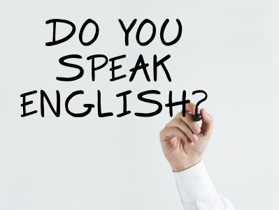

|
|

Kursevi za odrasleVaš cilj učenja engleskog je da napokon možete da ga razumete, da možete da se izražavate jasno i bez straha u svakodnevnim situacijama ili da dodatno razvijete i sačuvate jezičke veštine i povećate vaš fond reči. Kakve god da su vaše želje i potrebe učenja engleskog jezika, mi ćemo vam pomoći da ih ostvarite kroz zadatke i aktivnosti koje će vas podsticati i u kojima ćete uživati. Upišite se na naše programe i imaćete priliku da komunicirate na engleskom, poboljšate vaše jezičke veštine i postanete sigurniji govornik. Kursevi opšteg engleskog jezika za odrasle su podeljeni na šest nivoa - od početnog 1 do višeg 2. Redovni kursevi (dva puta nedeljno po 90 minuta) traju od tri do šest meseci, u zavisnosti od nivoa. Na svakom kursu se razvijaju sve četiri veštine: pisanje, čitanje, govor i slušanje, a poseban akcenat je na komunikacijskim veštinama. Posle svakog kursa moguće je i pohađanje posebnog, jednomesečnog konverzacijskog kursa. Imajući u vidu mnogobrojne svakodnevne obaveze odraslih polaznika, termine određujemo isključivo u dogovoru sa njima, a našim đacima smo na raspolaganju ne samo radnim danima od 8.30 (po potrebi i ranije) do 22.00 (po potrebi i kasnije), već i vikendom. |